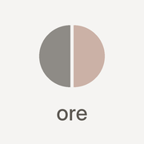
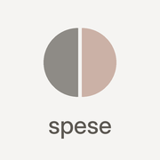

Doppionodo
Registri dello studio. Aprite quello che vi serve e aggiungetelo alla schermata Home.

Registro orele ore di ogni giorno, da mandare il venerdì

Registro speseogni spesa con commessa e categoria
Su iPhone: aprite il registro ore, toccate Condividi e poi «Aggiungi alla schermata Home». Basta una sola icona, «Doppionodo»: dentro si passa da un registro all'altro con i pulsanti Ore · Spese · Fatture in alto.